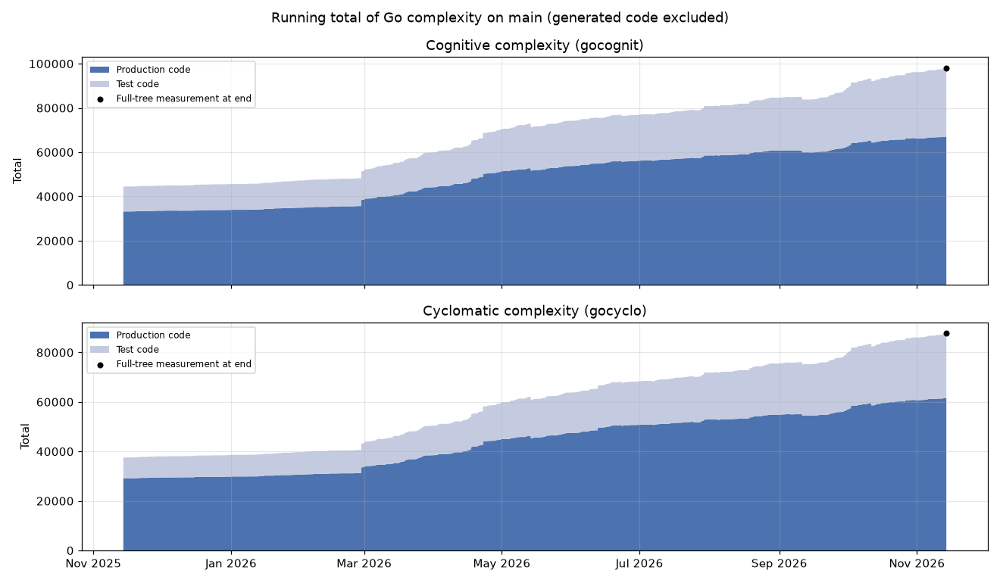
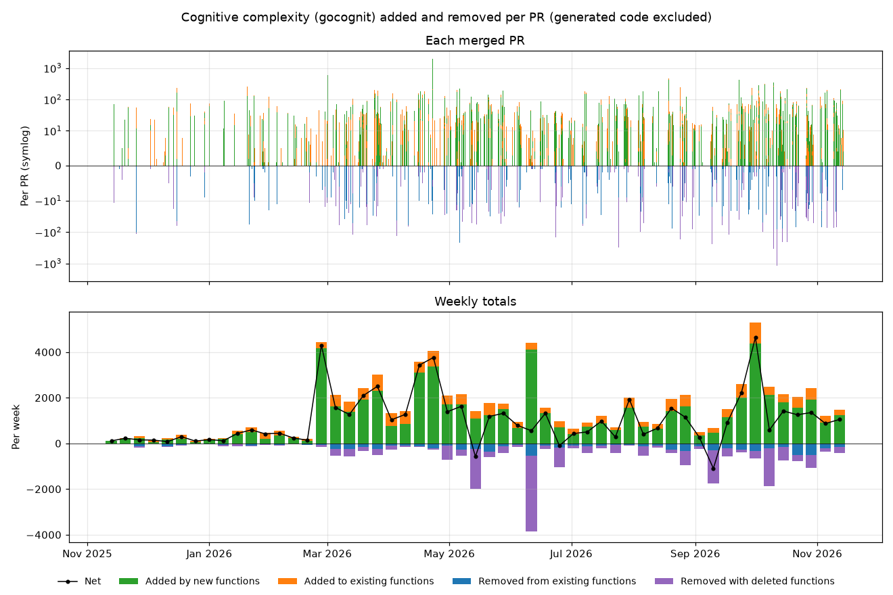
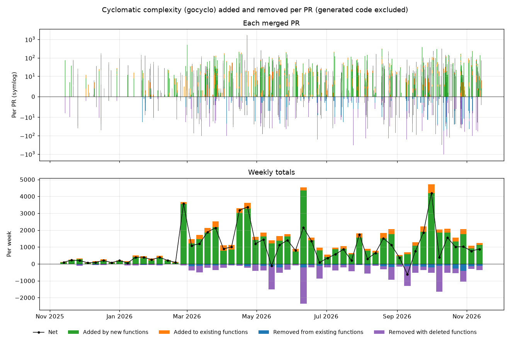
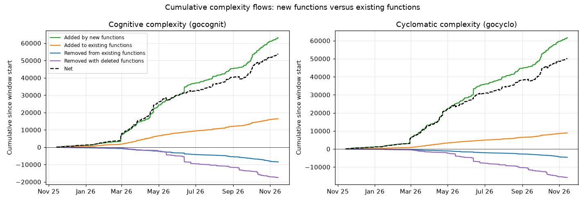
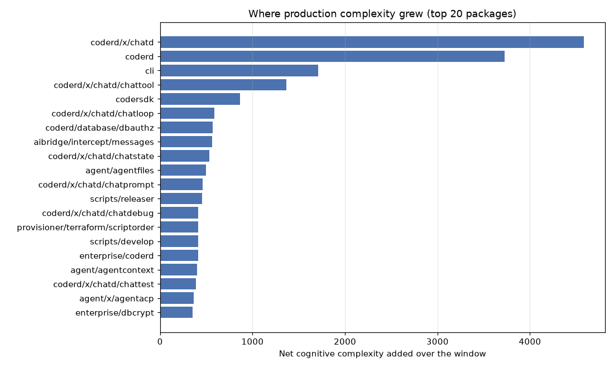
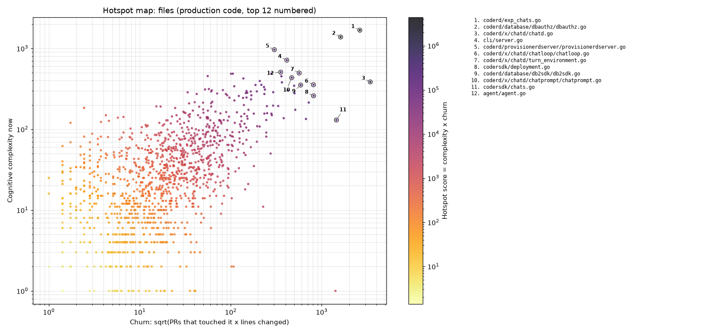
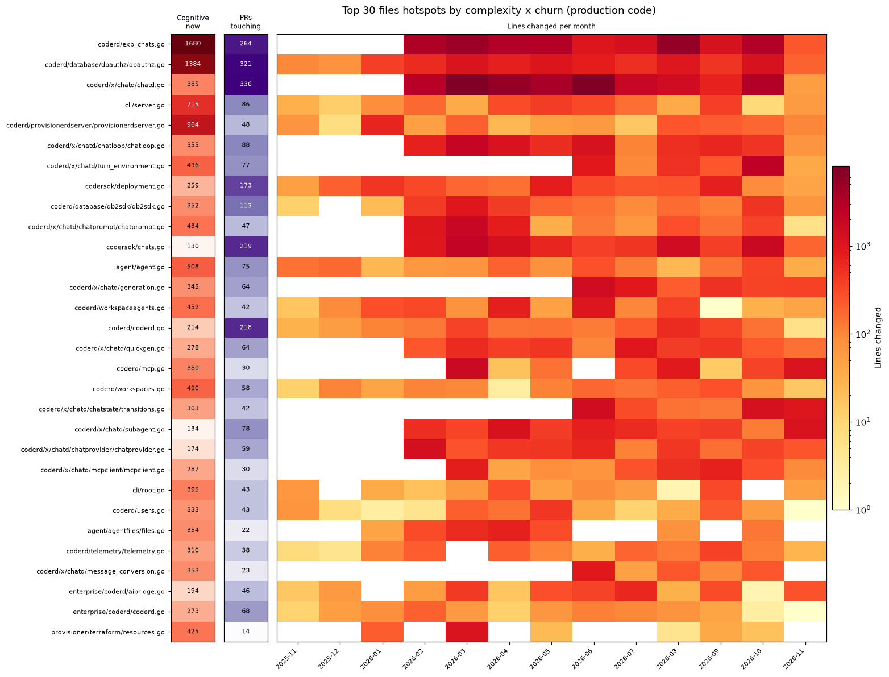
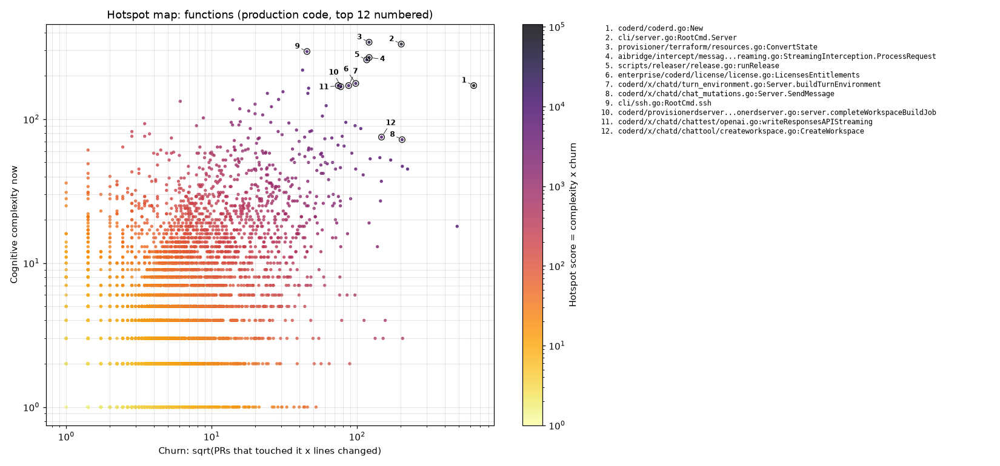
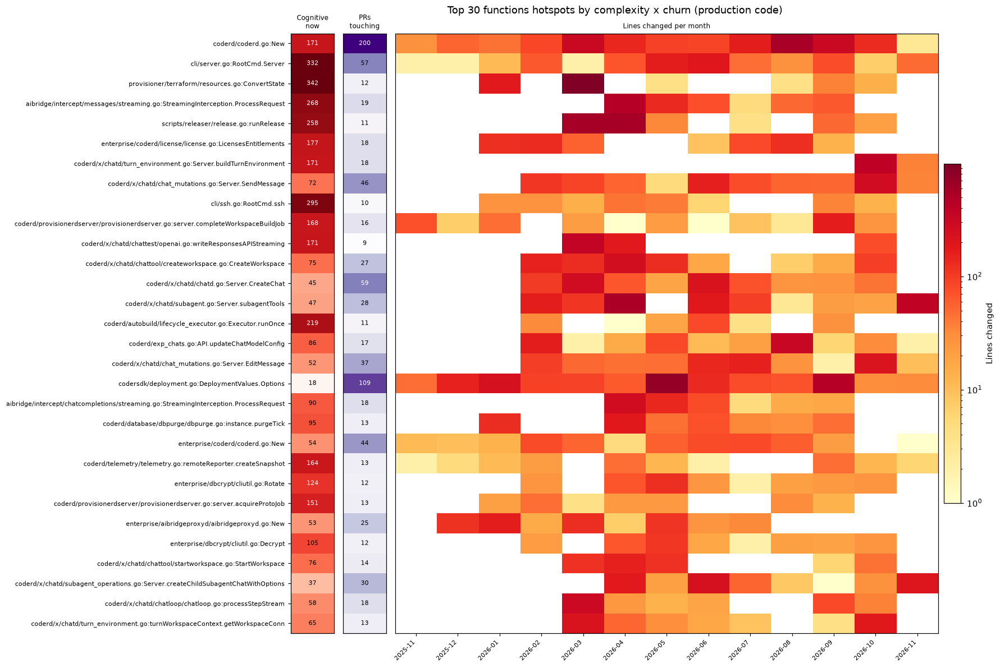

# Go complexity trend: summary Window: 2025-11-14T06:57:23Z to 2026-11-14T00:00:24Z, 6326 PRs merged into `main`. Generated Go files are excluded. | Metric | Start | End | Change | From PRs | Not attributed to a PR | |---|---|---|---|---|---| | Cognitive | 44,373 | 98,147 | +53,774 (121.2%) | 53,703 | 71 | | Cyclomatic | 37,472 | 87,723 | +50,251 (134.1%) | 50,179 | 72 | Cognitive complexity flows over the window: - Added by new functions: 63,172 (79% of all additions) - Added to existing functions: 16,482 - Removed from existing functions: -8,499 - Removed with deleted functions: -17,452 - PRs that raised complexity: 1,775; lowered it: 293 Function changes: changed: 5,264, moved_from: 235, moved_to: 235, new: 19,075, removed: 4,388, touched: 16,238 ## Top file hotspots | # | File | Cognitive | Cyclomatic | PRs | Lines changed | Score | |---|---|---|---|---|---|---| | 1 | `coderd/exp_chats.go` | 1680 | 1509 | 264 | 26184 | 4,417,019 | | 2 | `coderd/database/dbauthz/dbauthz.go` | 1384 | 2187 | 321 | 8139 | 2,237,042 | | 3 | `coderd/x/chatd/chatd.go` | 385 | 400 | 336 | 34899 | 1,318,369 | | 4 | `cli/server.go` | 715 | 485 | 86 | 1986 | 295,491 | | 5 | `coderd/provisionerdserver/provisionerdserver.go` | 964 | 598 | 48 | 1897 | 290,892 | | 6 | `coderd/x/chatd/chatloop/chatloop.go` | 355 | 320 | 88 | 7495 | 288,307 | | 7 | `coderd/x/chatd/turn_environment.go` | 496 | 416 | 77 | 4161 | 280,754 | | 8 | `codersdk/deployment.go` | 259 | 289 | 173 | 3834 | 210,935 | | 9 | `coderd/database/db2sdk/db2sdk.go` | 352 | 402 | 113 | 3060 | 206,987 | | 10 | `coderd/x/chatd/chatprompt/chatprompt.go` | 434 | 336 | 47 | 4667 | 203,263 | | 11 | `codersdk/chats.go` | 130 | 194 | 219 | 9649 | 188,976 | | 12 | `agent/agent.go` | 508 | 327 | 75 | 1674 | 180,000 | | 13 | `coderd/x/chatd/generation.go` | 345 | 309 | 64 | 3883 | 171,986 | | 14 | `coderd/workspaceagents.go` | 452 | 351 | 42 | 3103 | 163,175 | | 15 | `coderd/coderd.go` | 214 | 166 | 218 | 2379 | 154,113 | ## Top function hotspots | # | Function | Cognitive | Cyclomatic | PRs | Lines changed | Score | |---|---|---|---|---|---|---| | 1 | `coderd/coderd.go:New` | 171 | 120 | 200 | 2012 | 108,474 | | 2 | `cli/server.go:RootCmd.Server` | 332 | 148 | 57 | 711 | 66,836 | | 3 | `provisioner/terraform/resources.go:ConvertState` | 342 | 149 | 12 | 1220 | 41,381 | | 4 | `aibridge/intercept/messages/streaming.go:StreamingInterception.ProcessRequest` | 268 | 89 | 19 | 772 | 32,458 | | 5 | `scripts/releaser/release.go:runRelease` | 258 | 147 | 11 | 1234 | 30,059 | | 6 | `enterprise/coderd/license/license.go:LicensesEntitlements` | 177 | 91 | 18 | 533 | 17,337 | | 7 | `coderd/x/chatd/turn_environment.go:Server.buildTurnEnvironment` | 171 | 112 | 18 | 426 | 14,974 | | 8 | `coderd/x/chatd/chat_mutations.go:Server.SendMessage` | 72 | 40 | 46 | 904 | 14,682 | | 9 | `cli/ssh.go:RootCmd.ssh` | 295 | 115 | 10 | 205 | 13,357 | | 10 | `coderd/provisionerdserver/provisionerdserver.go:server.completeWorkspaceBuildJob` | 168 | 71 | 16 | 374 | 12,996 | | 11 | `coderd/x/chatd/chattest/openai.go:writeResponsesAPIStreaming` | 171 | 59 | 9 | 614 | 12,712 | | 12 | `coderd/x/chatd/chattool/createworkspace.go:CreateWorkspace` | 75 | 35 | 27 | 804 | 11,050 | | 13 | `coderd/x/chatd/chatd.go:Server.CreateChat` | 45 | 36 | 59 | 839 | 10,012 | | 14 | `coderd/x/chatd/subagent.go:Server.subagentTools` | 47 | 26 | 28 | 1497 | 9,622 | | 15 | `coderd/autobuild/lifecycle_executor.go:Executor.runOnce` | 219 | 50 | 11 | 162 | 9,245 | ## Net cognitive complexity growth by package (production code) | Package directory | Net change | |---|---| | `coderd/x/chatd` | +4,580 | | `coderd` | +3,723 | | `cli` | +1,710 | | `coderd/x/chatd/chattool` | +1,364 | | `codersdk` | +865 | | `coderd/x/chatd/chatloop` | +589 | | `coderd/database/dbauthz` | +568 | | `aibridge/intercept/messages` | +562 | | `coderd/x/chatd/chatstate` | +534 | | `agent/agentfiles` | +494 | | `coderd/x/chatd/chatprompt` | +458 | | `scripts/releaser` | +455 | | `coderd/x/chatd/chatdebug` | +414 | | `provisioner/terraform/scriptorder` | +414 | | `scripts/develop` | +412 |









| # | File | Cognitive | Cyclomatic | PRs | Lines changed | Score |
|---|---|---|---|---|---|---|
| 1 | coderd/exp_chats.go | 1680 | 1509 | 264 | 26184 | 4,417,019 |
| 2 | coderd/database/dbauthz/dbauthz.go | 1384 | 2187 | 321 | 8139 | 2,237,042 |
| 3 | coderd/x/chatd/chatd.go | 385 | 400 | 336 | 34899 | 1,318,369 |
| 4 | cli/server.go | 715 | 485 | 86 | 1986 | 295,491 |
| 5 | coderd/provisionerdserver/provisionerdserver.go | 964 | 598 | 48 | 1897 | 290,892 |
| 6 | coderd/x/chatd/chatloop/chatloop.go | 355 | 320 | 88 | 7495 | 288,307 |
| 7 | coderd/x/chatd/turn_environment.go | 496 | 416 | 77 | 4161 | 280,754 |
| 8 | codersdk/deployment.go | 259 | 289 | 173 | 3834 | 210,935 |
| 9 | coderd/database/db2sdk/db2sdk.go | 352 | 402 | 113 | 3060 | 206,987 |
| 10 | coderd/x/chatd/chatprompt/chatprompt.go | 434 | 336 | 47 | 4667 | 203,263 |
| 11 | codersdk/chats.go | 130 | 194 | 219 | 9649 | 188,976 |
| 12 | agent/agent.go | 508 | 327 | 75 | 1674 | 180,000 |
| 13 | coderd/x/chatd/generation.go | 345 | 309 | 64 | 3883 | 171,986 |
| 14 | coderd/workspaceagents.go | 452 | 351 | 42 | 3103 | 163,175 |
| 15 | coderd/coderd.go | 214 | 166 | 218 | 2379 | 154,113 |
| 16 | coderd/x/chatd/quickgen.go | 278 | 274 | 64 | 3948 | 139,741 |
| 17 | coderd/mcp.go | 380 | 394 | 30 | 4460 | 138,999 |
| 18 | coderd/workspaces.go | 490 | 392 | 58 | 1356 | 137,417 |
| 19 | coderd/x/chatd/chatstate/transitions.go | 303 | 309 | 42 | 4273 | 128,361 |
| 20 | coderd/x/chatd/subagent.go | 134 | 111 | 78 | 5799 | 90,122 |
| 21 | coderd/x/chatd/chatprovider/chatprovider.go | 174 | 200 | 59 | 4447 | 89,127 |
| 22 | coderd/x/chatd/mcpclient/mcpclient.go | 287 | 258 | 30 | 2873 | 84,258 |
| 23 | cli/root.go | 395 | 317 | 43 | 1014 | 82,480 |
| 24 | coderd/users.go | 333 | 284 | 43 | 1254 | 77,326 |
| 25 | agent/agentfiles/files.go | 354 | 304 | 22 | 2146 | 76,918 |
| 26 | coderd/telemetry/telemetry.go | 310 | 268 | 38 | 1488 | 73,715 |
| 27 | coderd/x/chatd/message_conversion.go | 353 | 309 | 23 | 1527 | 66,154 |
| 28 | enterprise/coderd/aibridge.go | 194 | 193 | 46 | 2413 | 64,634 |
| 29 | enterprise/coderd/coderd.go | 273 | 143 | 68 | 808 | 63,992 |
| 30 | provisioner/terraform/resources.go | 425 | 208 | 14 | 1357 | 58,579 |
| 31 | coderd/aibridgedserver/aibridgedserver.go | 196 | 184 | 55 | 1558 | 57,375 |
| 32 | coderd/x/chatd/chattest/openai.go | 294 | 150 | 23 | 1630 | 56,925 |
| 33 | coderd/database/dbgen/dbgen.go | 137 | 208 | 96 | 1526 | 52,436 |
| 34 | cli/ssh.go | 487 | 276 | 21 | 531 | 51,426 |
| 35 | cli/exp_scaletest.go | 486 | 275 | 21 | 483 | 48,946 |
| 36 | enterprise/dbcrypt/dbcrypt.go | 293 | 342 | 22 | 1256 | 48,705 |
| 37 | coderd/x/chatd/chattool/createworkspace.go | 193 | 112 | 35 | 1787 | 48,267 |
| 38 | scripts/develop/main.go | 263 | 235 | 13 | 2189 | 44,366 |
| 39 | enterprise/coderd/license/license.go | 297 | 198 | 19 | 1171 | 44,301 |
| 40 | enterprise/aibridgeproxyd/aibridgeproxyd.go | 156 | 133 | 37 | 2124 | 43,732 |
| 41 | coderd/workspacebuilds.go | 283 | 221 | 28 | 825 | 43,012 |
| 42 | coderd/database/modelqueries.go | 149 | 155 | 85 | 944 | 42,207 |
| 43 | aibridge/intercept/messages/streaming.go | 280 | 109 | 21 | 1027 | 41,120 |
| 44 | codersdk/workspacesdk/agentconn.go | 158 | 221 | 37 | 1707 | 39,708 |
| 45 | coderd/coderdtest/coderdtest.go | 234 | 211 | 40 | 701 | 39,184 |
| 46 | coderd/userauth.go | 340 | 261 | 24 | 499 | 37,208 |
| 47 | coderd/externalauth/externalauth.go | 247 | 234 | 20 | 1114 | 36,868 |
| 48 | coderd/x/chatd/chatloop/compaction.go | 156 | 123 | 31 | 1773 | 36,573 |
| 49 | coderd/x/chatd/chat_mutations.go | 244 | 173 | 13 | 1438 | 33,361 |
| 50 | aibridge/intercept/messages/base.go | 130 | 148 | 36 | 1681 | 31,980 |
| # | Function | Cognitive | Cyclomatic | PRs | Lines changed | Score |
|---|---|---|---|---|---|---|
| 1 | coderd/coderd.go:New | 171 | 120 | 200 | 2012 | 108,474 |
| 2 | cli/server.go:RootCmd.Server | 332 | 148 | 57 | 711 | 66,836 |
| 3 | provisioner/terraform/resources.go:ConvertState | 342 | 149 | 12 | 1220 | 41,381 |
| 4 | aibridge/intercept/messages/streaming.go:StreamingInterception.ProcessRequest | 268 | 89 | 19 | 772 | 32,458 |
| 5 | scripts/releaser/release.go:runRelease | 258 | 147 | 11 | 1234 | 30,059 |
| 6 | enterprise/coderd/license/license.go:LicensesEntitlements | 177 | 91 | 18 | 533 | 17,337 |
| 7 | coderd/x/chatd/turn_environment.go:Server.buildTurnEnvironment | 171 | 112 | 18 | 426 | 14,974 |
| 8 | coderd/x/chatd/chat_mutations.go:Server.SendMessage | 72 | 40 | 46 | 904 | 14,682 |
| 9 | cli/ssh.go:RootCmd.ssh | 295 | 115 | 10 | 205 | 13,357 |
| 10 | coderd/provisionerdserver/provisionerdserver.go:server.completeWorkspaceBuildJob | 168 | 71 | 16 | 374 | 12,996 |
| 11 | coderd/x/chatd/chattest/openai.go:writeResponsesAPIStreaming | 171 | 59 | 9 | 614 | 12,712 |
| 12 | coderd/x/chatd/chattool/createworkspace.go:CreateWorkspace | 75 | 35 | 27 | 804 | 11,050 |
| 13 | coderd/x/chatd/chatd.go:Server.CreateChat | 45 | 36 | 59 | 839 | 10,012 |
| 14 | coderd/x/chatd/subagent.go:Server.subagentTools | 47 | 26 | 28 | 1497 | 9,622 |
| 15 | coderd/autobuild/lifecycle_executor.go:Executor.runOnce | 219 | 50 | 11 | 162 | 9,245 |
| 16 | coderd/exp_chats.go:API.updateChatModelConfig | 86 | 46 | 17 | 662 | 9,123 |
| 17 | coderd/x/chatd/chat_mutations.go:Server.EditMessage | 52 | 30 | 37 | 784 | 8,857 |
| 18 | codersdk/deployment.go:DeploymentValues.Options | 18 | 11 | 109 | 2182 | 8,778 |
| 19 | aibridge/intercept/chatcompletions/streaming.go:StreamingInterception.ProcessRequest | 90 | 40 | 18 | 522 | 8,724 |
| 20 | coderd/database/dbpurge/dbpurge.go:instance.purgeTick | 95 | 44 | 13 | 539 | 7,952 |
| 21 | enterprise/coderd/coderd.go:New | 54 | 43 | 44 | 468 | 7,749 |
| 22 | coderd/telemetry/telemetry.go:remoteReporter.createSnapshot | 164 | 77 | 13 | 166 | 7,619 |
| 23 | enterprise/dbcrypt/cliutil.go:Rotate | 124 | 60 | 12 | 313 | 7,599 |
| 24 | coderd/provisionerdserver/provisionerdserver.go:server.acquireProtoJob | 151 | 74 | 13 | 162 | 6,930 |
| 25 | enterprise/aibridgeproxyd/aibridgeproxyd.go:New | 53 | 32 | 25 | 606 | 6,524 |
| 26 | enterprise/dbcrypt/cliutil.go:Decrypt | 105 | 47 | 12 | 278 | 6,065 |
| 27 | coderd/x/chatd/chattool/startworkspace.go:StartWorkspace | 76 | 33 | 14 | 447 | 6,012 |
| 28 | coderd/x/chatd/subagent_operations.go:Server.createChildSubagentChatWithOptions | 37 | 30 | 30 | 720 | 5,438 |
| 29 | coderd/x/chatd/chatloop/chatloop.go:processStepStream | 58 | 34 | 18 | 470 | 5,335 |
| 30 | coderd/x/chatd/turn_environment.go:turnWorkspaceContext.getWorkspaceConn | 65 | 27 | 13 | 510 | 5,293 |
| 31 | coderd/exp_chats.go:createChatInputFromParts | 74 | 33 | 12 | 375 | 4,964 |
| 32 | aibridge/intercept/messages/blocking.go:BlockingInterception.ProcessRequest | 66 | 33 | 15 | 365 | 4,884 |
| 33 | cli/create.go:RootCmd.Create | 155 | 61 | 11 | 87 | 4,795 |
| 34 | coderd/mcp.go:API.updateMCPServerConfig | 41 | 31 | 15 | 810 | 4,519 |
| 35 | coderd/exp_chats.go:API.createChatModelConfig | 45 | 29 | 18 | 532 | 4,404 |
| 36 | aibridge/intercept/responses/streaming.go:StreamingResponsesInterceptor.ProcessRequest | 73 | 32 | 11 | 328 | 4,385 |
| 37 | agent/x/agentdesktop/api.go:API.handleAction | 83 | 64 | 5 | 475 | 4,045 |
| 38 | cli/configssh.go:RootCmd.configSSH | 137 | 56 | 7 | 119 | 3,954 |
| 39 | coderd/x/chatd/chatd.go:New | 27 | 23 | 47 | 447 | 3,914 |
| 40 | coderd/workspaces.go:createWorkspace | 82 | 46 | 16 | 140 | 3,881 |
| 41 | coderd/workspaceapps/apptest/apptest.go:Run | 151 | 47 | 5 | 117 | 3,652 |
| 42 | enterprise/cli/server.go:RootCmd.Server | 46 | 19 | 18 | 328 | 3,535 |
| 43 | coderd/x/chatd/chatloop/compaction.go:generateCompactionSummary | 50 | 28 | 14 | 329 | 3,393 |
| 44 | coderd/coderdtest/users.go:UsersFilter | 58 | 39 | 6 | 541 | 3,304 |
| 45 | cli/exp_scaletest_chat.go:RootCmd.scaletestChat | 75 | 33 | 6 | 317 | 3,271 |
| 46 | coderd/workspacebuilds.go:API.postWorkspaceBuildsInternal | 84 | 42 | 10 | 147 | 3,221 |
| 47 | coderd/oauth2provider/tokens.go:authorizationCodeGrant | 45 | 36 | 16 | 316 | 3,200 |
| 48 | coderd/coderdtest/coderdtest.go:NewOptions | 57 | 50 | 18 | 175 | 3,199 |
| 49 | coderd/provisionerdserver/provisionerdserver.go:InsertWorkspaceResource | 94 | 41 | 5 | 231 | 3,195 |
| 50 | coderd/x/chatd/chatprompt/chatprompt.go:partsToMessageParts | 55 | 34 | 16 | 210 | 3,188 |